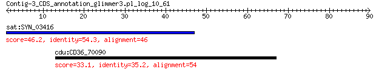

bitscore colors: <40, 40-50 , 50-80, 80-200, >200
 BLASTP 2.2.31+
Reference: Stephen F. Altschul, Thomas L. Madden, Alejandro A.
Schaffer, Jinghui Zhang, Zheng Zhang, Webb Miller, and David J.
Lipman (1997), "Gapped BLAST and PSI-BLAST: a new generation of
protein database search programs", Nucleic Acids Res. 25:3389-3402.
Reference for composition-based statistics: Alejandro A. Schaffer,
L. Aravind, Thomas L. Madden, Sergei Shavirin, John L. Spouge, Yuri
I. Wolf, Eugene V. Koonin, and Stephen F. Altschul (2001),
"Improving the accuracy of PSI-BLAST protein database searches with
composition-based statistics and other refinements", Nucleic Acids
Res. 29:2994-3005.
Database: all_orgs
14,240,465 sequences; 5,121,972,263 total letters
Query= Contig-3_CDS_annotation_glimmer3.pl_log_10_61
Length=89
Score E
Sequences producing significant alignments: (Bits) Value
sat:SYN_03416 cytoplasmic protein 46.2 2e-05
cdu:CD36_70090 DNA-directed RNA polymerase I subunit, putative ... 33.1 5.7
> sat:SYN_03416 cytoplasmic protein
Length=49
Score = 46.2 bits (108), Expect = 2e-05, Method: Compositional matrix adjust.
Identities = 25/46 (54%), Positives = 29/46 (63%), Gaps = 0/46 (0%)
Query 1 VKSPGSTWEWHLRLVGWSLVEGGRIPCVAVKCVEMWRNTGGEGGPL 46
+KS G T E HL+L S EG IP V VK V++ RNTGGEG L
Sbjct 1 MKSLGLTQEVHLKLFSLSKEEGSGIPGVEVKFVDIRRNTGGEGDFL 46
> cdu:CD36_70090 DNA-directed RNA polymerase I subunit, putative
(EC:2.7.7.6)
Length=1166
Score = 33.1 bits (74), Expect = 5.7, Method: Composition-based stats.
Identities = 19/54 (35%), Positives = 27/54 (50%), Gaps = 6/54 (11%)
Query 13 RLVGWSLVEGGRIPCVAVKCVEMWRNTGGEGGPLDEDWRSGAKAWGANRIRYPG 66
R+VGW+ E GRI + W+ GG G PLD + +N+ +YPG
Sbjct 567 RIVGWTTHEQGRI---VADTLRYWKVNGGHGLPLDLEI---GYVPPSNKGQYPG 614
Lambda K H a alpha
0.322 0.142 0.532 0.792 4.96
Gapped
Lambda K H a alpha sigma
0.267 0.0410 0.140 1.90 42.6 43.6
Effective search space used: 128453544840